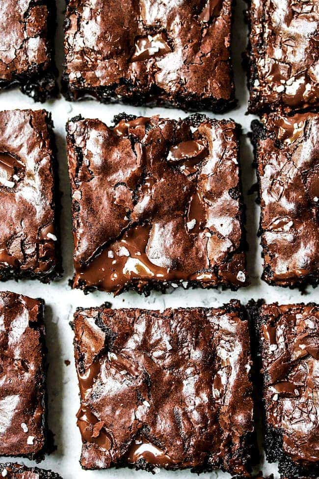

Scrumptious One Bowl Brownies

Description
Brownies are hands down one of my all-time favorite desserts. I love this brownie recipe, but the other day I needed a quick and EASY dessert because some friends stopped by unexpectedly and I wanted to serve them something sweet. I whipped up my One Bowl Brownies and everyone was dying over the deliciousness!
These easy homemade brownies taste similar to box brownies, in a good way, but even better! And I promise they are just as easy. You only need ONE bowl and you don't even need a mixer! I guarantee they will be a family favorite dessert.
Ingredients
- Butter-Use unsalted butter. The butter needs to be melted and cooled slightly. You can melt the butter in the microwave or in a pan on the stovetop.
- Sugar AND Brown Sugar-use granulated sugar AND brown sugar. The brown sugar makes the brownies extra moist!
- Eggs-choose large eggs and make sure they are at room temperature. I usually take the eggs out of the fridge 30 minutes before I start. If you forget, place your eggs in a bowl of warm water for a few minutes.
- Vanilla Extract-PURE vanilla extract is the way to go! I know it is pricey, but SO worth the extra cost.
- Flour-You need all-purpose flour. If you need the brownies to be gluten-free you can use all-purpose gluten-free flour. I like Cup4Cup gluten-free flour.
- Cocoa-I like to use Dutch processed cocoa but you can use unsweetened cocoa powder. Splurge and use a high quality cocoa for the best chocolate flavor. I like this Dutch processed cocoa or this one!
- Espresso Powder-The espresso powder is optional but I like using it because it intensifies the chocolate flavor. I highly recommend using it for the best brownies. It really makes a difference.
- Salt-Use kosher salt or sea salt.
- Chocolate-I like to use semi-sweet chocolate chunks, but feel free to use chocolate chips. Guittard brand is my favorite!
Steps
- Preheat oven to 350°F. Spray a 9x13" baking pan with nonstick cooking spray. Line with parchment paper with an overhang on the sides and spray again. This will make it easy to lift the brownies out of the pan after baking. Set the pan aside.
- In a large mixing bowl stir together melted butter, granulated sugar, brown sugar, eggs, and vanilla extract until smooth and combined.
- Sift in flour and cocoa. Add the salt and espresso powder, if using, and stir until just combined. Don't over mix. Fold in 1 cup of chopped chocolate. Spread evenly into prepared pan and sprinkle the remaining ¼ cup of chopped chocolate on top of the brownies.
- Bake for 25-30 minutes on the middle rack in the oven until the brownies are just set to touch. Don't over bake the brownies. They will set up as they cool. Remove from oven and let cool before cutting into squares. You can sprinkle them with a little flaky sea salt, if desired.